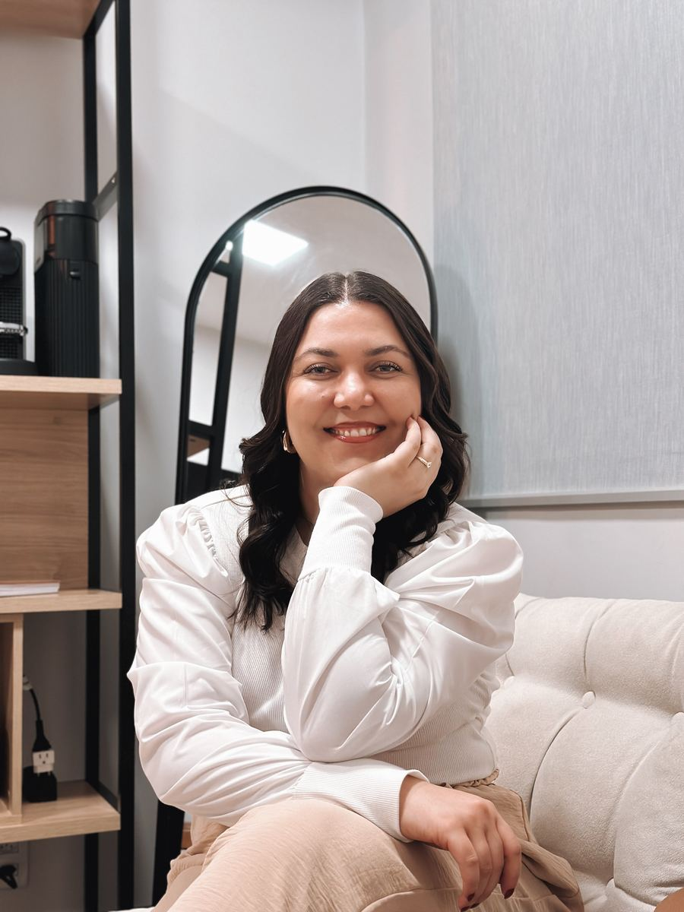
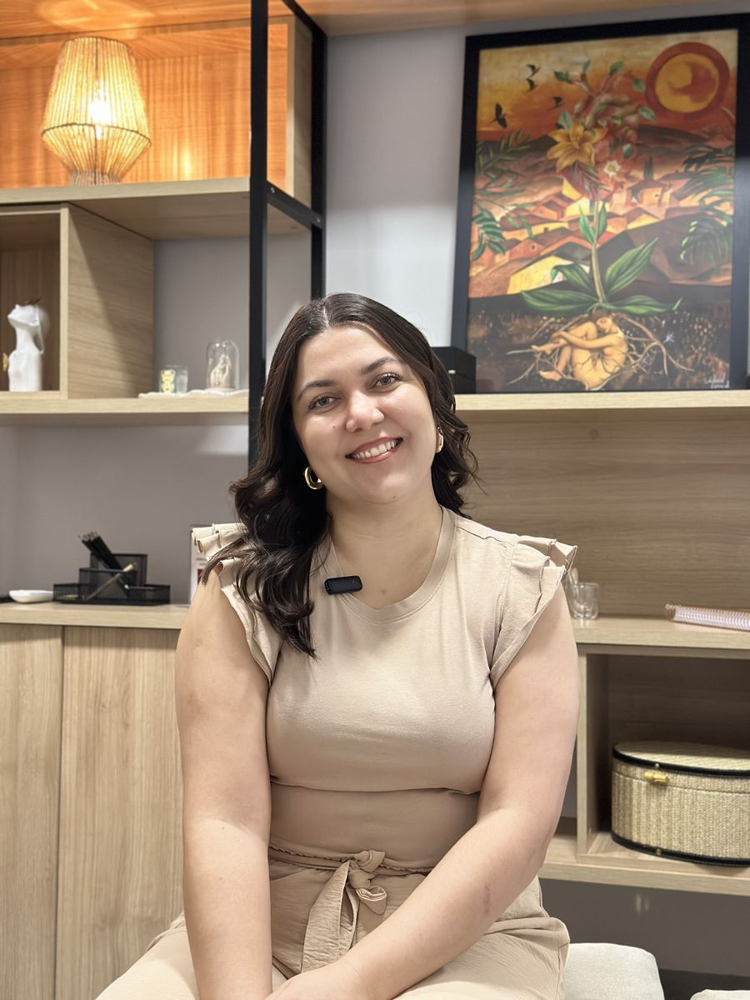

Um espaço seguro para mulheres que equilibram trabalho, liderança, família, rotina e vida emocional, sem querer continuar apenas funcionando no automático.


"Entendo o quanto é difícil parar, respirar e dizer: eu preciso de cuidado."
Além da atuação clínica, minha trajetória também foi construída no ambiente corporativo. Atuo com RH, já passei por diferentes contextos organizacionais, fui líder e vivi de perto as pressões e os desafios emocionais da vida profissional.
Por isso, no consultório, não acolho apenas a profissional que trabalha. Acolho a mulher que tenta equilibrar carreira, relações, responsabilidades e a própria saúde emocional. A mulher que sustenta muito e quase nunca encontra espaço para sair do automático.
Aqui, você encontra um espaço só seu: com escuta genuína, acolhimento e ferramentas práticas para se compreender melhor, resgatar sua leveza e construir uma vida com mais equilíbrio. Atendo online para todo o Brasil, com base em Goiânia/GO.
Se algo aqui tocou em você, isso já é um começo. Você não precisa estar em crise para merecer cuidado.
✨ Quero começar minha terapiaDar o primeiro passo pode ser difícil, mas você não precisa estar em crise para começar a se cuidar.
Minha experiência no contexto organizacional me permite compreender, de forma mais profunda, questões como:
"Tudo isso deixa marcas que vão além do ambiente profissional. Chega em casa, nos relacionamentos, no sono, no silêncio. É sobre esse peso que também conversamos aqui."
Iniciar terapia também pode ser um espaço de pausa e reconexão consigo mesma. Por isso, quero te mostrar como esse processo acontece de forma leve, acolhedora e no seu ritmo.
Você me envia uma mensagem no WhatsApp e conversamos um pouco sobre o que você está vivendo, suas dúvidas e o que te trouxe até aqui. A partir disso, agendamos sua primeira sessão.
Na nossa primeira conversa, vou conhecer sua história, sua rotina e como tudo isso tem impactado sua vida emocional. É um espaço seguro e acolhedor, onde começamos a compreender as mudanças que fazem sentido para você.
A terapia é construída junto com você. A partir das suas necessidades, definimos objetivos e caminhos possíveis para que o processo faça sentido para a sua realidade e para o momento que você está vivendo.
Os encontros acontecem semanalmente, por videochamada, com duração média de 50 minutos. Você pode estar em casa, no trabalho ou em qualquer lugar onde se sinta confortável.
Meu trabalho é baseado na Terapia Cognitivo-Comportamental (TCC), uma abordagem acolhedora, prática e direcionada para a vida real. Além da escuta, a TCC oferece ferramentas práticas para lidar com ansiedade, autocobrança e sobrecarga emocional.
A terapia acompanha suas mudanças, fases e necessidades ao longo do tempo. O processo é construído com presença, acolhimento e espaço para que você possa se compreender com mais leveza, equilíbrio e autenticidade.
"Nem sempre é fácil sustentar tantos papéis ao mesmo tempo. A psicoterapia é um espaço onde você pode olhar para si com mais gentileza, sem precisar dar conta de tudo sozinha."
Tirar dúvidas →A TCC é uma das abordagens mais estudadas e eficazes da psicologia. Ela trabalha com a conexão entre o que você pensa, o que você sente e como você age.
O triângulo da TCC
A TCC ajuda a identificar e transformar esse ciclo 🌱
A TCC parte de uma ideia simples: a forma como você interpreta as situações influencia diretamente como você se sente e o que você faz.
Por exemplo: se você acredita que "vai errar em tudo", pode começar a evitar desafios, se sentir travada e então se cobrar ainda mais por "não agir". É um ciclo. E ele pode ser quebrado.
Na terapia, vamos identificar esses padrões juntas, questionar crenças que limitam você e construir novas formas de pensar e agir, de forma prática, humana e no seu ritmo.
Quero experimentar →Identifica os pensamentos negativos que surgem sem você perceber e que sabotam sua confiança.
Aprende a acolher e gerenciar suas emoções sem ser dominada por elas.
Transforma comportamentos que te prendem em ciclos de sofrimento, ansiedade ou procrastinação.
A TCC é objetiva: você sai das sessões com recursos concretos para usar na sua vida real.
Cheguei completamente esgotada, achando que era fraqueza minha. A Ana me fez entender que eu estava sobrecarregada há anos e que eu merecia cuidado. Hoje me reconheço de um jeito que achei que nunca seria possível.
Eu tinha medo de começar terapia, achava que era "coisa grave", mas desde a primeira sessão me senti completamente acolhida. A Ana é incrível. Mudou minha relação comigo mesma de um jeito que não imaginava.
Fiz terapia online pela primeira vez e fiquei impressionada. A qualidade, o acolhimento e a praticidade. A Ana entende exatamente o mundo em que vivemos. As sessões me devolveram a clareza que eu precisava.
* Depoimentos representativos. Identidades preservadas por sigilo ético.
Você se dedica tanto a tudo e a todos, ao trabalho, às pessoas que ama, às suas obrigações. Que tal, por uma vez, se colocar no centro do seu cuidado?